visión por computador · sjk002 · lección 001 · parcial 19-oct
Realce de imagen
Transformaciones geométricas y de intensidad, histogramas, ecualización y pseudocolor, con las demostraciones y el código que hay que saber escribir a mano.
marco · qué es realzar
Tres familias de operaciones
Puntual
\(s=T(r)\): cada píxel se transforma solo, con una ventana de 1×1. Es esta lección: negativo, log, gamma, ecualización.
De vecindad
\(g(x,y)\) depende de una ventana alrededor de \((x,y)\): filtros. Es la Lección 002.
Geométrica
Mueve píxeles de sitio: escalado, rotación, traslación. Obliga a interpolar valores.
Realce = «¿mejor para quién?» Mejorar para un humano (ver detalle) no es lo mismo que para una máquina (separar clases). No hay una medida universal: depende del problema.
marco · qué cae en el examen
Mapa y examen
threshold, gamma_correction, histeq, cumsum.bloque b · geometría e interpolación
Geometría
Coordenadas homogéneas, mapeo directo frente a inverso e interpolación: vecino, bilineal y bicúbica.
geometría · coordenadas homogéneas
Transformación afín
$$\begin{bmatrix}x'\\y'\\1\end{bmatrix}=A\begin{bmatrix}x\\y\\1\end{bmatrix}$$
$$A=\begin{bmatrix}a&b&t_x\\c&d&t_y\\0&0&1\end{bmatrix}$$
¿Por qué el 1 extra? La traslación \(x'=x+t_x\) no es lineal en \(\mathbb{R}^2\): no cabe en una matriz 2×2. Con coordenadas homogéneas pasa a ser un producto de matrices, como las demás.
| transformación | matriz \(A\) | efecto |
|---|---|---|
| identidad | \(\begin{bmatrix}1&0&0\\0&1&0\\0&0&1\end{bmatrix}\) | no cambia nada |
| escalado | \(\begin{bmatrix}s_x&0&0\\0&s_y&0\\0&0&1\end{bmatrix}\) | \(x'=s_xx,\;y'=s_yy\) |
| rotación \(\theta\) | \(\begin{bmatrix}\cos\theta&-\sin\theta&0\\\sin\theta&\cos\theta&0\\0&0&1\end{bmatrix}\) | gira alrededor del origen |
| traslación | \(\begin{bmatrix}1&0&t_x\\0&1&t_y\\0&0&1\end{bmatrix}\) | desplaza \((t_x,t_y)\) |
| cizalla (shear) | \(\begin{bmatrix}1&h&0\\0&1&0\\0&0&1\end{bmatrix}\) | \(x'=x+hy\): inclina |
geometría · demostración
Componer = multiplicar
Contraejemplo. \(T\) = traslación (1,0) y \(R\) = rotación de 90°. Aplicadas al origen:
$$RT=\begin{bmatrix}0&-1&0\\1&0&1\\0&0&1\end{bmatrix}\;\Rightarrow\;(0,0)\mapsto(0,1)$$
$$TR=\begin{bmatrix}0&-1&1\\1&0&0\\0&0&1\end{bmatrix}\;\Rightarrow\;(0,0)\mapsto(1,0)$$
geometría · cómo se implementa
Forward e inverse mapping
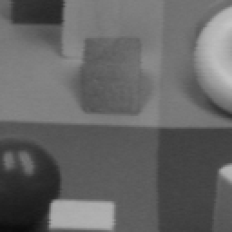
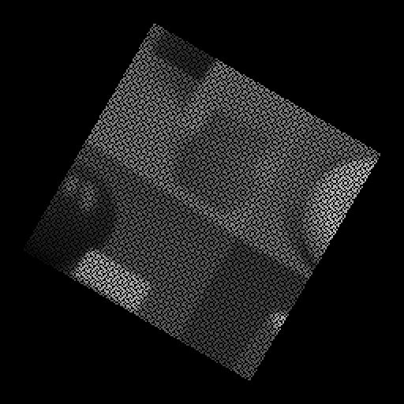
rotación de 30° y escala 1,3, resultados reales (map_coordinates, orden 1)
Directo (forward)
Recorre la entrada: \((x',y')=A(x,y)\), redondeado. Varios píxeles caen en el mismo sitio (solapes) y otros no reciben ninguno (huecos).
Inverso (inverse)
Recorre la salida \((x',y')\), calcula \((x,y)=A^{-1}(x',y')\) e interpola en la entrada. Cada píxel de salida recibe valor exactamente una vez.
interpolación · demostración
Interpolación bilineal
Equivale a dos lineales encadenadas: primero en \(x\) sobre las dos filas y luego en \(y\).
interpolación · cálculo a mano
Bilineal en (0,25 ; 0,5)
filas = \(y\) (0 y 1); columnas = \(x\) (0 y 1)
\(f_{00}=10,\;f_{10}=20,\;f_{01}=30,\;f_{11}=40\) (de ejemplo)
interpolación · comparación
Coste y calidad
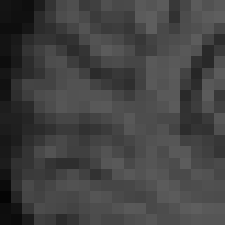
| método | vecinos | resultado |
|---|---|---|
| vecino más próximo | 1 píxel | bloques (pixelado), pero no inventa valores nuevos |
| bilineal | 4 píxeles | suaviza; no sobrepasa el rango |
| bicúbica | 16 píxeles | más nítida y más cara; puede sobrepasar el rango |
interpolación · por qué la bicúbica se sale
Núcleos de interpolación
$$f(x)=\sum_k f_k\,h(x-k)$$
Interpolar es convolucionar las muestras con un núcleo \(h\). Su anchura fija cuántos vecinos entran: 1, 2 y 4 por eje, es decir 1, 4 y 16 en 2D.
np.clip.bloque c · transformaciones de intensidad
Intensidad
Funciones \(s=T(r)\) píxel a píxel: umbral, negativo, logaritmo, gamma y lineal a trozos, con su código NumPy.
intensidad · \(s=T(r)\)
Umbral y estiramiento
$$s=\begin{cases}L-1&r>m\\0&r\le m\end{cases}$$
$$s=\frac{L-1}{1+(m/r)^{E}}$$
examen · código vectorizado
threshold(im, thr)
def threshold(im, thr):
return (im > thr) * 255
def threshold2(im, thr):
return np.where(im > thr, 255, 0)
int64. Para guardar o mostrar como imagen: .astype(np.uint8).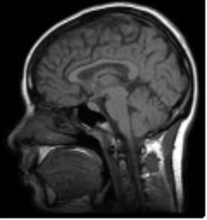
thr = 90| condicion | array booleano del tamaño de im |
| x, y | valor donde es True / False; admiten escalares o arrays |
| retorno | array nuevo; con un solo argumento devuelve los índices de los True |
| efecto | comparación elemento a elemento: array booleano con la forma de im |
| × 255 | True vale 1 y False vale 0: da 255 o 0 |
intensidad · \(s=L-1-r\)
Negativo
$$s=L-1-r$$
Para qué sirve. En una mamografía, el detalle claro o gris sobre una zona grande oscura cuesta verlo. Al invertir queda oscuro sobre fondo claro, donde el ojo distingue mejor pequeñas variaciones.
examen · trampa de uint8
Negativo y uint8
def negative(im):
return 255 - im # bien: 255 - 10 = 245
im = np.array([10, 20, 200], dtype=np.uint8)
im - 255 # [ 11 21 200] ¡mal! envuelve
uint8 solo guarda 0–255 y la aritmética es módulo 256: \(10-255=-245\equiv 11\pmod{256}\). No es una advertencia: numpy no avisa.im.astype(float). En 255 - im el resultado nunca sale del rango.| \(r\) | 255 - im | im - 255 |
|---|---|---|
| 10 | 245 | 11 (error) |
| 20 | 235 | 21 (error) |
| 200 | 55 | 201 (error) |
intensidad · \(s=c\log(1+r)\)
Transformación logarítmica
Expande los oscuros (pendiente alta cerca de 0) y comprime los claros.
intensidad · aplicaciones
Dónde se usa el log
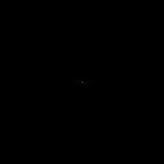
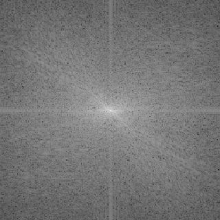
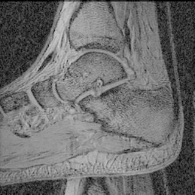
np.log(1 + np.abs(F)).intensidad · \(s=c\,r^{\gamma}\)
Transformación gamma
$$s=c\,r^{\gamma},\quad r\in[0,1]$$
- γ < 1: aclara (curva por encima de la identidad)
- γ > 1: oscurece (curva por debajo)
- γ = 1: identidad
intensidad · demostración
Por qué \(r^\gamma\) en [0,1]
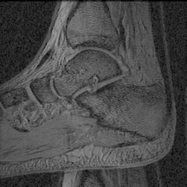
intensidad · aplicación clásica
Corrección de monitores
El monitor aplica \(r^{2{,}5}\) (típico entre 2,2 y 2,5) y oscurece los medios tonos. Precorregimos con \(r^{1/2{,}5}\): la composición es la identidad y vemos la imagen original.
examen · ejercicio 4
gamma_correction y rgb2gray
def gamma_correction(im, a, gamma):
return a * im ** gamma # im normalizada a [0,1]
def rgb2gray(im_rgb):
coeffs = np.array([0.2126, 0.7512, 0.0722])
g = 1 / 2.2
return (gamma_correction(im_rgb[:, :, 0], coeffs[0], g) +
gamma_correction(im_rgb[:, :, 1], coeffs[1], g) +
gamma_correction(im_rgb[:, :, 2], coeffs[2], g))
np.array(Image.open(f))/255.0), o la potencia se sale de rango.lab 1 · demostración algebraica
Son gammas disfrazadas
p = 2 es el valor por defecto del lab
lab 1 · código y comprobación
dark y bright son inversas
def darkenImg(im, p=2):
return (im ** float(p)) / (255 ** (p - 1))
def brightenImg(im, p=2):
return np.power(255.0 ** (p - 1) * im, 1. / p)
uint8, im ** 2 desborda: 20² = 400 se guarda como 144, 200² = 40000 como 64. Con float(p) el resultado es float64.np.power(a, b) opera elemento a elemento sobre arrays; math.pow solo admite escalares.ejercicio de la diapositiva 18
Empareja γ = 3, 4, 5
iglesia.pgm real; las tres versiones se calculan con \(255\,(r/255)^{\gamma}\)
intensidad · puntos \((r_1,s_1),(r_2,s_2)\)
Lineal a trozos
$$T(r)=\begin{cases}\dfrac{s_1}{r_1}\,r & r\le r_1\\[2mm] s_1+\dfrac{s_2-s_1}{r_2-r_1}(r-r_1) & r_1\lt r\le r_2\\[2mm] s_2+\dfrac{L-1-s_2}{L-1-r_2}(r-r_2) & r>r_2\end{cases}$$
Rebanado de planos de bits (bit-plane slicing): (im >> k) & 1 extrae el bit \(k\). Intensity-level slicing: resaltar un rango \([A,B]\).
T(r) de ejemplo, con puntos de control inventados
examen · código
Lineal a trozos con np.interp
def stretch(im, r1, s1, r2, s2):
return np.interp(im, [0, r1, r2, 255],
[0, s1, s2, 255])
def stretch_full(im): # (rmin,0) y (rmax,255)
return stretch(im, im.min(), 0, im.max(), 255)
| x | valores a evaluar: aquí la imagen (cualquier forma) |
| xp | abscisas de los nodos, crecientes |
| fp | ordenadas de los nodos; fuera de rango se repiten los extremos |
xp no es estrictamente creciente: usa np.where para el umbral.bloque d · histograma y ecualización
Histograma
Qué mide un histograma, por qué la CDF lo uniformiza, el cálculo a mano y el código histeq.
histograma · definición
Qué es un histograma
$$h(r_k)=n_k$$
$$p(r_k)=\frac{n_k}{MN}$$
\(n_k\) = nº de píxeles con nivel \(r_k\); \(MN\) = nº total de píxeles. Así \(\sum_k p(r_k)=1\).
h = np.bincount(im.ravel(), minlength=256) # o bien h, _ = np.histogram(im, bins=256, range=(0, 256)) p = h / im.size
ejercicio de la diapositiva 20
Empareja imágenes e histogramas
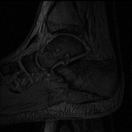
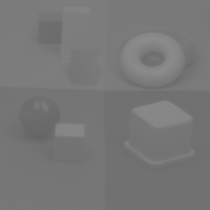
ecualización · objetivo
Idea de la ecualización
barras: histograma (recortado); curva: \(T(r)\) real de la imagen
Una imagen con mucho rango dinámico y detalle tiene un histograma parecido al uniforme.
¿Existe una \(T\) que convierta cualquier histograma en uno uniforme?
- \(T\) monótona creciente: no invierte niveles.
- Pendiente alta donde hay muchos píxeles: los separa.
ecualización · demostración
Por qué la CDF uniformiza
ecualización · imágenes digitales
Versión discreta
$$s_k=\mathrm{round}\!\left((L-1)\sum_{j=0}^{k}p_r(r_j)\right)$$
$$=\mathrm{round}\!\left(\frac{L-1}{MN}\sum_{j=0}^{k}n_j\right)$$
La integral pasa a ser una suma acumulada y el resultado se redondea a un nivel entero. Los números de la derecha son los del ejemplo del libro (siguiente diapositiva).
790, 1023, 850, …
0,193, 0,443, 0,650, …
1,350, 3,098, 4,551, …
1, 3, 5, …
ecualización · 3 bits, 64×64, \(MN=4096\)
Ecualización a mano
| \(r_k\) | \(n_k\) | \(p_r\) | CDF | 7·CDF | \(s_k\) |
|---|---|---|---|---|---|
| 0 | 790 | 0,193 | 0,193 | 1,350 | 1 |
| 1 | 1023 | 0,250 | 0,443 | 3,098 | 3 |
| 2 | 850 | 0,208 | 0,650 | 4,551 | 5 |
| 3 | 656 | 0,160 | 0,810 | 5,672 | 6 |
| 4 | 329 | 0,080 | 0,891 | 6,234 | 6 |
| 5 | 245 | 0,060 | 0,950 | 6,653 | 7 |
| 6 | 122 | 0,030 | 0,980 | 6,862 | 7 |
| 7 | 81 | 0,020 | 1,000 | 7,000 | 7 |
Fusiones (mismo \(s_k\)):
$$\{3,4\}\to6,\qquad\{5,6,7\}\to7$$
Nuevo histograma:
{1: 790, 3: 1023, 5: 850, 6: 985, 7: 448}
ecualización · el resultado
No sale plano
antes: \(n_k\)
después: 0, 2 y 4 vacíos
lab 1 · código línea a línea
histeq del laboratorio
def histeq(im, nbins=256):
imhist, bins = np.histogram(im.flatten(), list(range(nbins)), density=False)
cdf = imhist.cumsum()
factor = 255 / cdf[-1]
im2 = np.interp(im.flatten(), bins[:-1], factor*cdf)
return im2.reshape(im.shape), cdf
| línea | qué hace |
|---|---|
np.histogram(...) | \(n_k\) y los bordes bins (los niveles 0…254) |
imhist.cumsum() | histograma acumulado: \(\sum_{j\le k}n_j\) |
255 / cdf[-1] | cdf[-1] \(=MN\): factor \((L-1)/MN\) |
np.interp(...) | evalúa \(T\) en cada píxel con la tabla (nivel, factor*cdf) |
lab 1 · funciones usadas
np.interp y np.histogram
| a | datos; con flatten() o ravel() para aplanar |
| bins | entero o lista de bordes: devuelve len(bins)-1 recuentos |
| range | (mín, máx) si bins es entero |
| retorno | (hist, bin_edges) |
| trampa | list(range(256)) da 255 contenedores; el último incluye 254 y 255 |
| idea | «busca \(x\) en la tabla \((x_p,f_p)\) e interpola»: es la LUT de \(T\) |
| aquí | xp = bins[:-1] (niveles), fp = factor*cdf (\(T\)) |
np.bincount e indexación (siguiente diapositiva).examen · versión para escribir a mano
Ecualizar con una LUT
def histeq2(im):
h = np.bincount(im.ravel(), minlength=256)
T = np.round(255 * np.cumsum(h) / im.size)
T = T.astype(np.uint8)
return T[im]
histeq del lab salvo un redondeo (diferencia máxima < 0,5 niveles en iglesia.pgm).¿Por qué funciona T[im]? Es fancy indexing: si im es un array de enteros, T[im][i,j] = T[im[i,j]]. El resultado tiene la forma de im.
T del ejemplo de 3 bits: la posición \(k\) guarda \(s_k\)
im (índices)
T[im] = T[0], T[1], T[3], T[7]
ejercicio de la diapositiva 24
Escribe tu cumsum
def my_cumsum(h): # con bucle
H = np.zeros_like(h)
acc = 0
for i in range(len(h)):
acc += h[i]
H[i] = acc
return H
def my_cumsum_vec(h): # sin bucle
n = len(h)
return np.tril(np.ones((n, n))) @ h
def check_cumsum(H1, H2):
return np.allclose(H1, H2) # o array_equal
La matriz np.tril(np.ones((n,n))) es triangular inferior de unos: la fila \(i\) suma \(h_0\ldots h_i\).
check_cumsum(my_cumsum(h), np.cumsum(h)) debe dar True.ecualización · resultados reales
Ecualización global y local
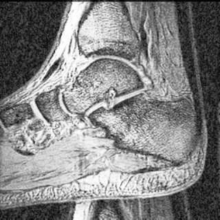
histeq)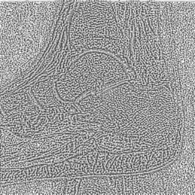
errata conocida
Ecualización y entropía
$$H(f(X))\le H(X)$$
Desigualdad de procesamiento de datos. \(T\) es una función determinista del nivel: no puede añadir información. Al fusionar niveles, la entropía baja o se queda igual (igual solo si \(T\) es inyectiva).
| imagen (real) | \(H\) antes | \(H\) después |
|---|---|---|
| huesos.pgm | 5,254 bits | 5,204 bits |
| iglesia.pgm | 5,975 bits | 5,918 bits |
A mano (de ejemplo): 4 niveles equiprobables; \(T\) fusiona los niveles 2 y 3.
$$H\big(\tfrac14,\tfrac14,\tfrac14,\tfrac14\big)=2\;\longrightarrow\;H\big(\tfrac14,\tfrac14,\tfrac12\big)=1{,}5\ \text{bits}$$
\(H=-\sum_k p_k\log_2 p_k\); \(\tfrac12\log_2 2=0{,}5\) y \(2\cdot\tfrac14\log_2 4=1\)
bloque e · pseudocolor y multiespectral
Pseudocolor
Rebanado de intensidad, composición de bandas en falso color y mapas de color de Matplotlib.
pseudocolor · rebanar en colores
Intensity slicing
El ojo distingue unas decenas de grises pero miles de colores: asignar color a rangos de intensidad hace visibles diferencias pequeñas.
idx = im // 32 # 0..7 out = palette[idx] # (M, N, 3)
palette es un array (8, 3) de colores RGB; indexar con idx es la misma LUT de antes.
pseudocolor · límite del método
Rayos X de aeropuerto
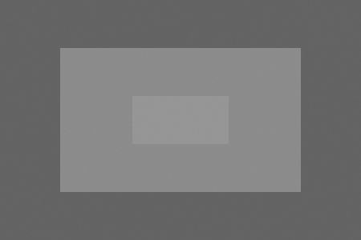
| zona (de ejemplo) | nivel | rebanada |
|---|---|---|
| fondo | 100 | 3 (96–127) |
| maleta | 140 | 4 (128–159) |
| objeto | 150 | 4 (128–159) |
multiespectral · falso color
Composición de bandas
| canal de pantalla | banda del sensor |
|---|---|
| R | NIR (infrarrojo cercano) |
| G | G (verde) |
| B | B (azul) |
fc = np.dstack((nir, g, b)) # (M, N, 3)
| tup | arrays 2D del mismo tamaño; se apilan en el eje 3 y salen \((M,N,3)\) |
No hay banda NIR en el curso: ejemplo con R y G permutadas, para mostrar np.dstack.
La vegetación refleja mucho NIR: en falso color aparece roja.
matplotlib · pseudocolor
Mapas de color
plt.imshow(im, cmap='hot') plt.colorbar()
pseudocolor · ¿qué podemos perder?
Luminosidad de los mapas
L* (CIELAB) real de cada mapa de Matplotlib, calculado con skimage
En gris, más valor = más claro: la luminosidad crece de forma monótona y el ojo ordena los niveles sin esfuerzo.
bloque f · cierre
Repaso
Chuleta de fórmulas y preguntas de verdadero o falso para practicar.
cierre · para repasar
Chuleta de fórmulas
| tema | fórmula |
|---|---|
| afín | \([x'\,y'\,1]^T=A\,[x\,y\,1]^T\); \(BA\) = primero \(A\); se usa el mapeo inverso \(A^{-1}\) |
| interpolación | vecino 1 · bilineal 4 · bicúbica 16 vecinos; \(f=ax+by+cxy+d\) |
| negativo | \(s=L-1-r\) (255 - im, nunca im - 255 en uint8) |
| logaritmo | \(s=c\log(1+r),\;c=\dfrac{L-1}{\log L}\) |
| gamma | \(s=c\,r^{\gamma}\) (\(r\in[0,1]\)); \(\gamma<1\) aclara, \(\gamma>1\) oscurece; inversa \(r^{1/\gamma}\) |
| lab 1 | \(\text{dark}=255(r/255)^p\); \(\text{bright}=255(r/255)^{1/p}\) |
| histograma | \(p(r_k)=n_k/MN\) |
| ecualización | \(s_k=\mathrm{round}\!\big(\tfrac{L-1}{MN}\sum_{j\le k}n_j\big)\); no plano y \(H(f(X))\le H(X)\) |
| código LUT | T = np.round(255*np.cumsum(h)/im.size).astype(np.uint8); T[im] |
cierre · practica
Preguntas V/F
uint8, im - 255 da valores negativos.FALSOenvuelve módulo 256: \(10-255\to 11\)